来源：https://nivut760ftk.feishu.cn/docx/IIHKdKoEnoQmETx3bp4cv8byn9g
自从上周给各位圈友分享了通过“投票引流”的方式，获得了很多圈友们的认可
既然大家都对引流这个话题感兴趣，那么今天我继续来给大家分享另外一个，低风险且高效率的小红书引流玩法。
这个玩法跟之前分享的“大号收藏小号”的方式有点像，但它相对来说会更易学易操作
那么大家都懂小红书引流的重要性，在这里我也废话不多说了，直接进入正题吧
先跟你们简单的说说，这个玩法的操作流程吧
首先它是需要准备一个小号，来发布带有微信号的笔记，然后用大号收藏小号的笔记
当有客户来私信咨询时，大号就通过发送小号的链接给到用户，从而达到引流的效果
接下来我会给大家模拟操作一遍，尽量让你们一学就能上手
首先注册一个小红书新号，来作为你的小号，去发布一篇带有微信号的笔记，比如像这样
发布的时候，一定要记住，标题和文案区不能出现任何的有引流的中文或拼音缩写！
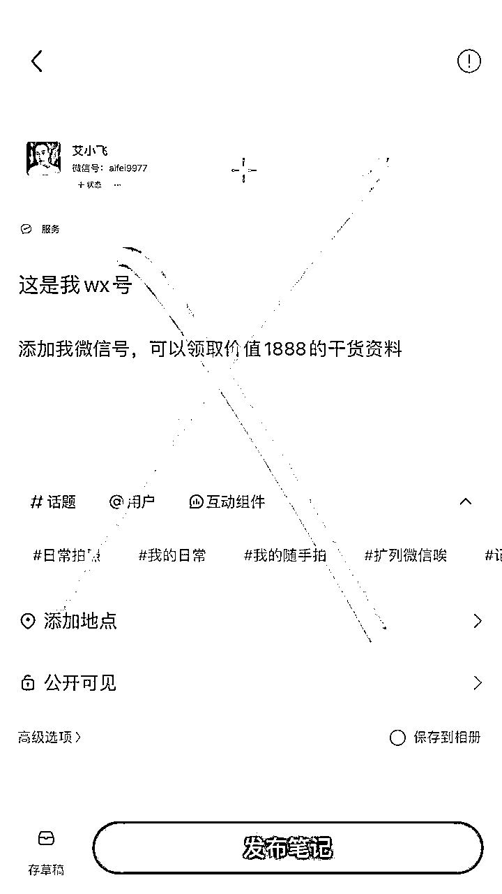
可直接用Emoji表情来代表你这篇笔记的暗意
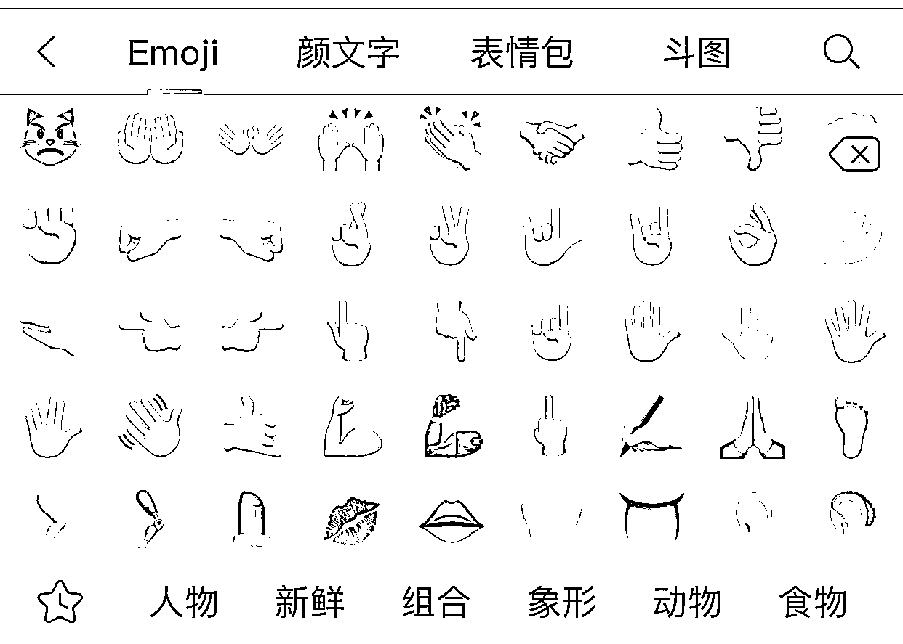
比如这个表情👨🦲”，代表是“我的”的暗意
比如这个表情“🛰️”，代表是“微信”的暗意
比如这个表情“👁”，代表是“看这”的暗意
比如这个表情“👆”，代表是“方向”的意思
那么“👨🦲🛰️👁👆”连起来的意思就是，“我的微信看这方向”
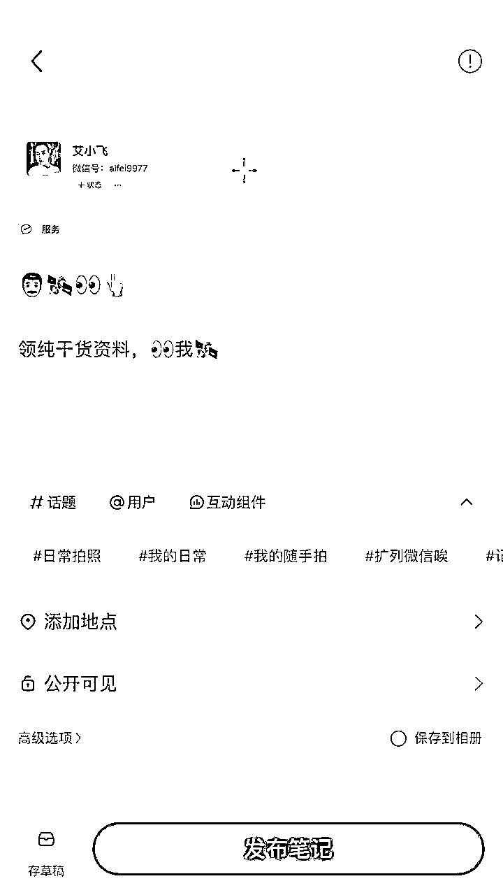
编辑完成后，就直接点击发布就完成了，等待下一步的操作
小秘诀：
在这里也跟你们说下一个小小的秘诀
那就是你们的微信号，尽量设置在六位数以内，或者是简单容易记的微信号。
不要放你的电话号码或很长的微信号去作为引留号！因为没有谁会去记住你那么长一段数字的。
如果用户一旦觉得加你会很麻烦，那么他们就会放弃添加你的微信号，从而影响到你的加微率
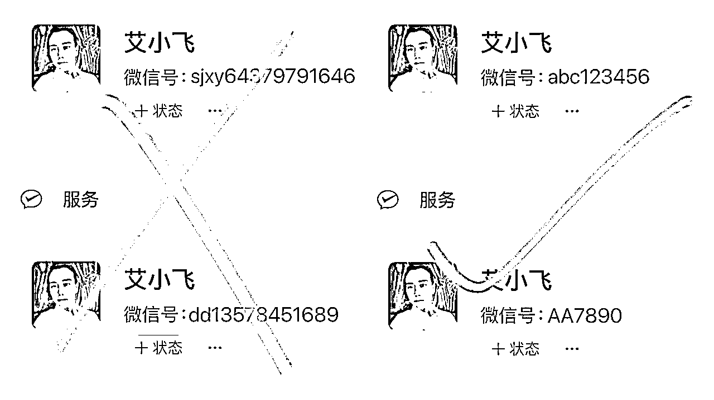
第二步呢，用你的大号去搜索并收藏小号的这篇笔记
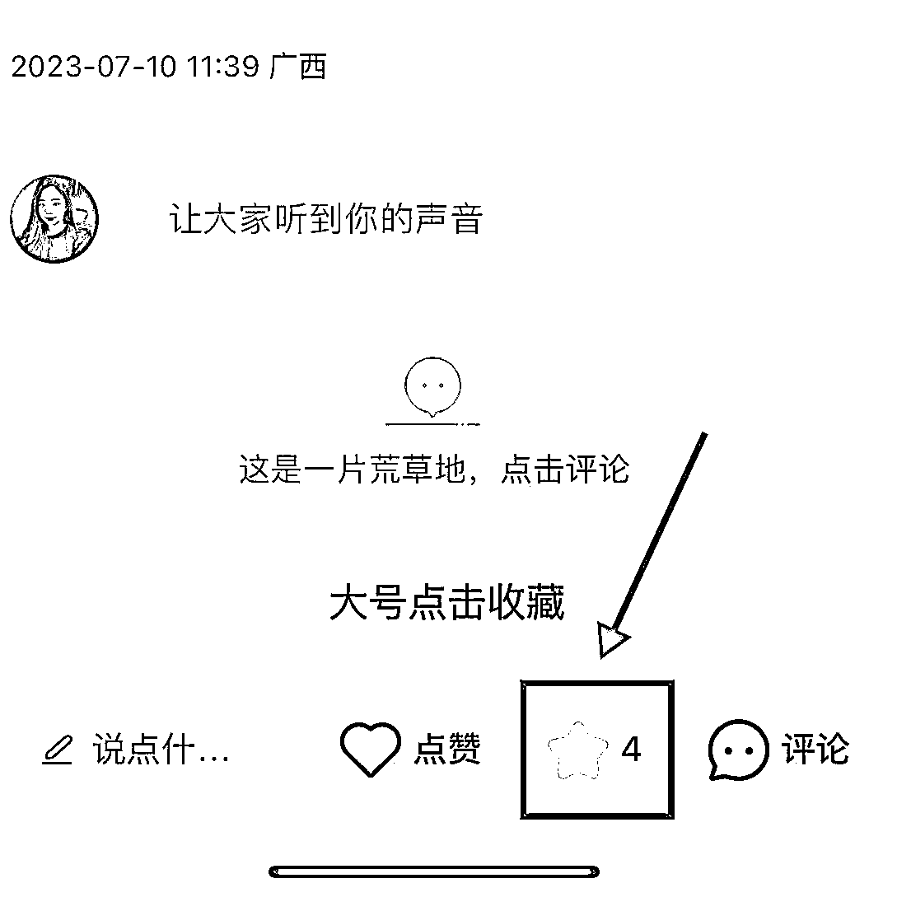
当有人来咨询问你的时候，比如问你“怎么买”“求链接”等
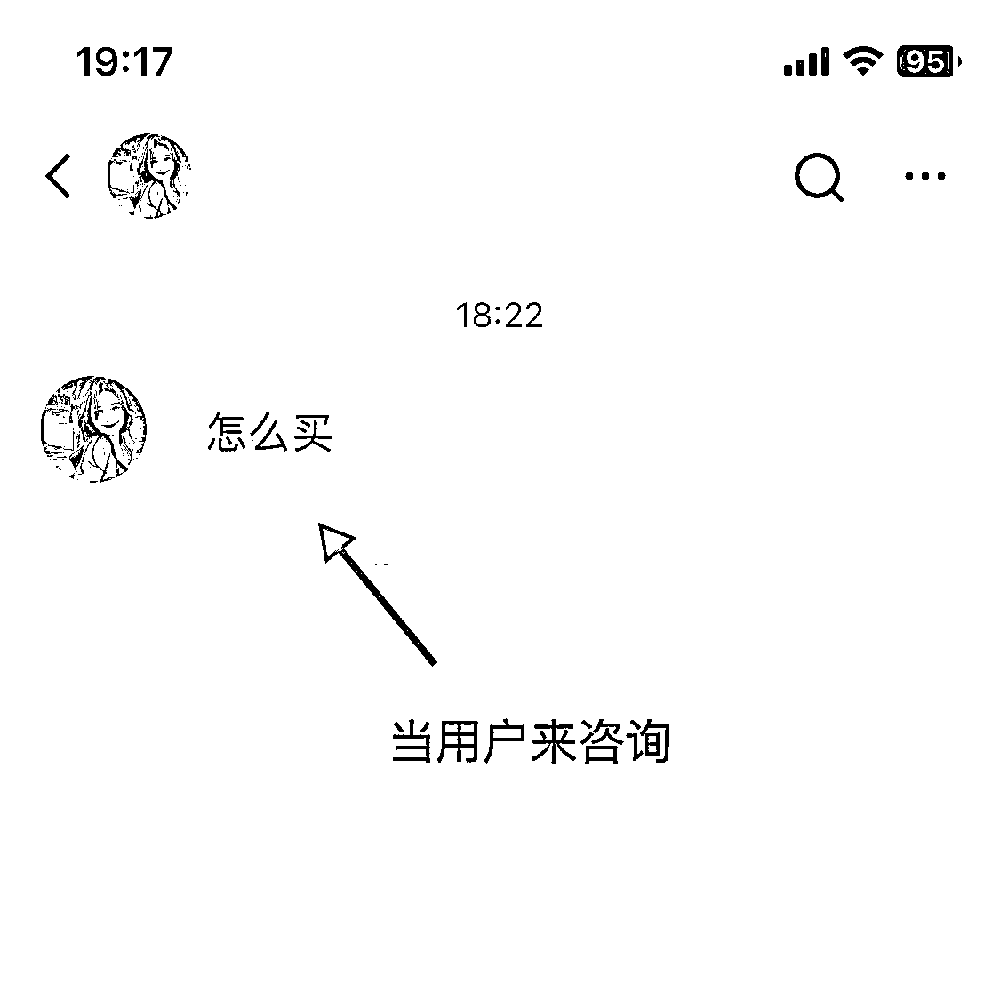
你可以点击“分享笔记”，在收藏列表里找到你刚刚收藏小号的笔记，
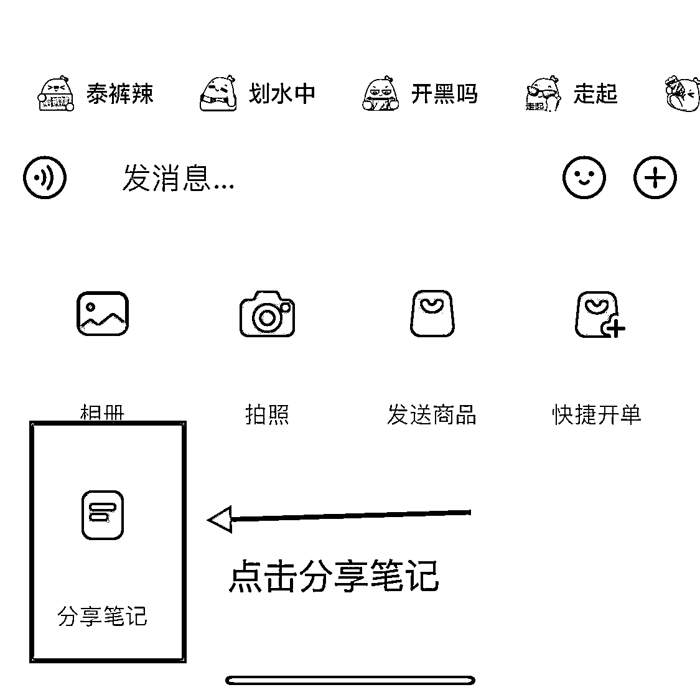
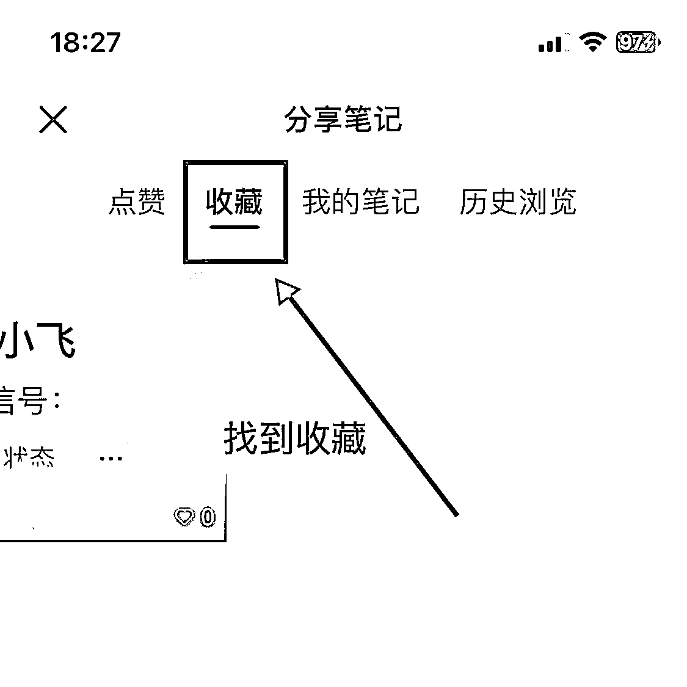
找到用户后就发送给对方，然后说“看这个”，“你点这个”等这些有引导性的关键词
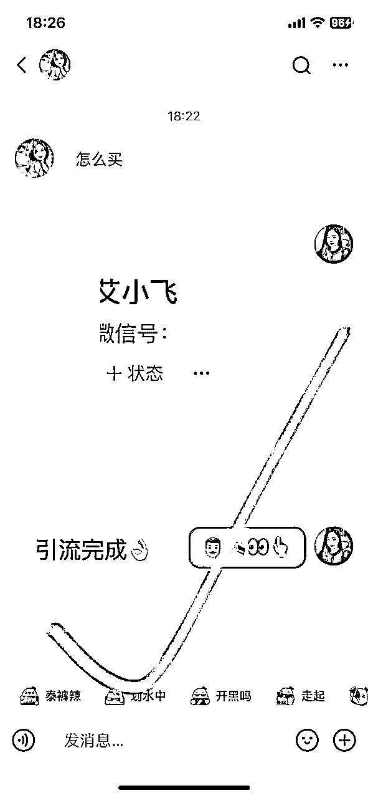
如果你担心被举报，也可以添加Emoji表情，比如像这样“🛰️👁👆”
这样整个引流的流程就完成了，基本的操作流程没什么过多复杂的，就是这么的简单！
小提示：
当你发送表情或暗意过去时。如果他看得懂是啥意思，那就最好
如果看不懂的话，你也不要去做过多的解释
特别是他来问你
“这是v吗？”
“这是微信吗？”
“这是什么啊”
你千万不要去回复
“是的”
“这是微信号”
“这是我的联系方式”
别人一旦举报你，那么你的私信功能就会被禁言了
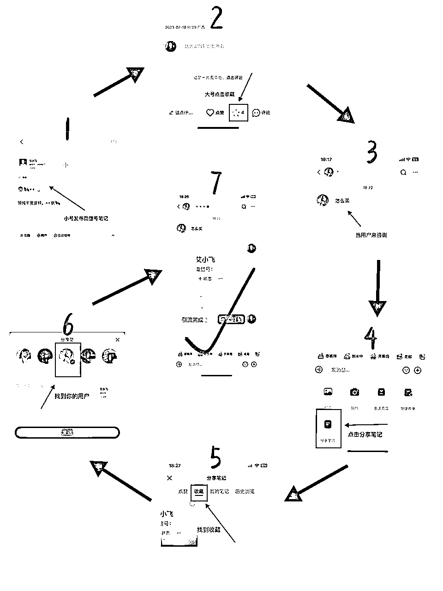
我给你们展示下，当别人通过私信的对话窗口看到你的引流信息时，别人是举报不了你的
而且它根本就没有这个举报的提示或功能！！
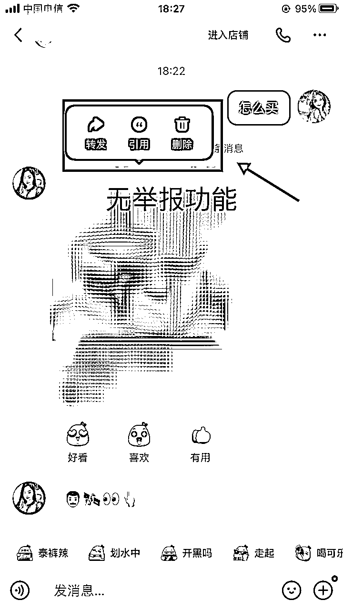
他只有点进你的小号链接里面才可以举报
不会影响你大号正常的私信，也不会把你的大号给限流了
但这里有个注意的点，就是你小号发布带有微信号的笔记时，如果别人一旦举报你了，那么你的笔记有可能被强行下架
因为目前没有哪个引流方式是100%安全的，所以在这里你心里有个底就行了
最好的办法就是，你每隔几个小时，你就发布一篇带有微信号的笔记
你持续发有10篇左右这样子，别人举报了A笔记，你至少还有B C D E笔记在展示
如果同时大批量都被举报了，那就再继续发布就行了
在这里，我也给大家一个建议：
就是尽量要用一些被违规过的帐号来作为你的小号发布笔记
比如：
你有个帐号私信功能被禁言了
或者你发布笔记都没什么流量的
再或者你这号多次被提示违规了
但只要你的这个号还能正常发布笔记。那就先别急着注销
可以用它来作为你的小号，去发布带有微信号的笔记
这样的话就不用再去另找新号来做小号了
好好利用它这个帐号最后仅有的价值，从而去节省你的帐号资源
在这里还是要给大家简单的说下，目前为止没有哪个引流方式是100%安全可靠的
因为官方一直在打击引流行为，平台的规则在变，我们的引流玩法也要跟着变
有可能过段时间这个玩法它就会被平台给补上bug了，所以你们学到了，能用就用上！
其实我也能预感得到，现在平台对于引流的打击是越来越严了，往后如果想从小红书引流到私域的朋友，要尽快的去布局好这个板块
越往后，想从小红书上引流的难度就越高，给到新人的机会也越来越少
因为我每天都在小红书上引流，对于这方面我是有很多踩坑和成功经验的
如果你们有啥不懂或者需要提问的，可以一起来交流经验
今天的分享就到了，谢谢大家
我叫艾小飞！
原创：艾小飞
转载可私信
禁止搬运和抄袭
微信：aifei9977 （记得备注来意）